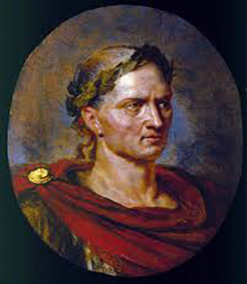

Caesar was a politician and general of the late Roman republic, who greatly extended the Roman empire before seizing power and making himself dictator of Rome, paving the way for the imperial system.
Julius Caesar was born in Rome on 12 or 13 July 100 BC into the prestigious Julian clan. His family were closely connected with the Marian faction in Roman politics. Caesar himself progressed within the Roman political system, becoming in succession quaestor, aedile and praetor. In 61-60 BC he served as governor of the Roman province of Spain. Back in Rome in 60, Caesar made a pact with Pompey and Crassus, who helped him to get elected as consul for 59 BC. The following year he was appointed governor of Roman Gaul where he stayed for eight years, adding the whole of modern France and Belgium to the Roman empire, and making Rome safe from the possibility of Gallic invasions. He made two expeditions to Britain, in 55 BC and 54 BC.
Caesar then returned to Italy, disregarding the authority of the senate and famously crossing the Rubicon river without disbanding his army. In the ensuing civil war Caesar defeated the republican forces. Pompey, their leader, fled to Egypt where he was assassinated. Caesar followed him and became romantically involved with the Egyptian queen, Cleopatra.
Caesar was now master of Rome and made himself consul and dictator. He used his power to carry out much-needed reform, relieving debt, enlarging the senate, building the Forum Iulium and revising the calendar. Dictatorship was always regarded a temporary position but in 44 BC, Caesar took it for life. His success and ambition alienated strongly republican senators. A group of these, led by Cassius and Brutus, assassinated Caesar on the Ides on March 44 BC. This sparked the final round of civil wars that ended the Republic and brought about the elevation of Caesar's great nephew and designated heir, Octavian, as Augustus, the first emperor.